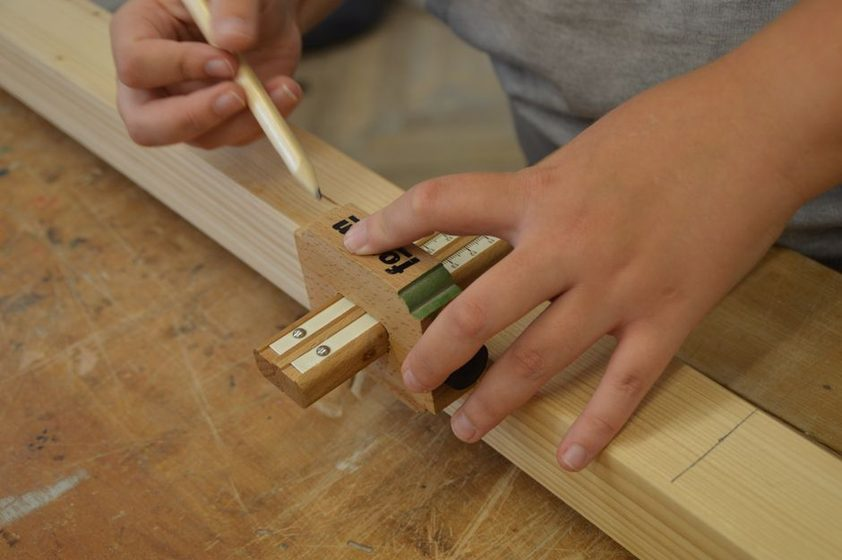

Cutlist checks the drawing before the timber pays for it.
Cutlist is a small planning tool built alongside the Railstile journal. Enter the dimensions for a project, and it lays out a checked cutting diagram, tracks a datum face per part, and flags places where small tolerances are stacking up before they reach the saw.
See how it worksWhat Cutlist Does
6 core featuresCutting diagrams
Turns a list of part dimensions into a laid-out diagram against your stock sheet size, so you can see the plan before the first cut.
Tolerance-stack warnings
Adds up small per-part allowances across a run of pieces and flags a project when the total exceeds a threshold you set.
Datum-face notes
Records which face and edge each part is measured from, so the reference stays consistent from drawing to bench.
Grain-direction flags
Marks the intended grain direction on each panel in the diagram, so orientation is decided once, on paper.
Revision history
Keeps every version of a cutlist as a numbered sheet, so a late change doesn't erase the version that still matches the stock in hand.
Offcut tracking
Notes leftover pieces from a finished cutlist so they can be matched against a future project instead of guessed at.
How It Works
4 stepsEnter the parts
List each part with its dimensions, material, and the datum face it should be measured from.
Set stock size
Give Cutlist the dimensions of the sheet or board stock you're actually starting from.
Review the diagram
Cutlist lays out the parts against the stock and highlights any stacked tolerance before it becomes a gap.
Print the sheet
Export a single sheet with the diagram, dimensions, and datum notes to keep at the bench.

Built From the Same Habit as the Journal
Cutlist doesn't try to replace judgment at the bench. It exists to catch the kind of error that's invisible on a single line of a cutlist but obvious once every part is drawn together — the same habit this journal writes about in longhand, article by article.
A Few Questions
— Does Cutlist replace a drawing?
No. It works from dimensions you've already decided on, either from a drawing or a plan you're following, and checks how they add up.
— Is Cutlist for a specific joint or material?
No. It works with any part dimensions, whether the project is solid wood, sheet stock, or a mix of both.
— Where can I read more about the ideas behind it?
The Railstile journal covers the reasoning in more detail, article by article. Start with Reading the Cutlist Before You Touch the Saw.